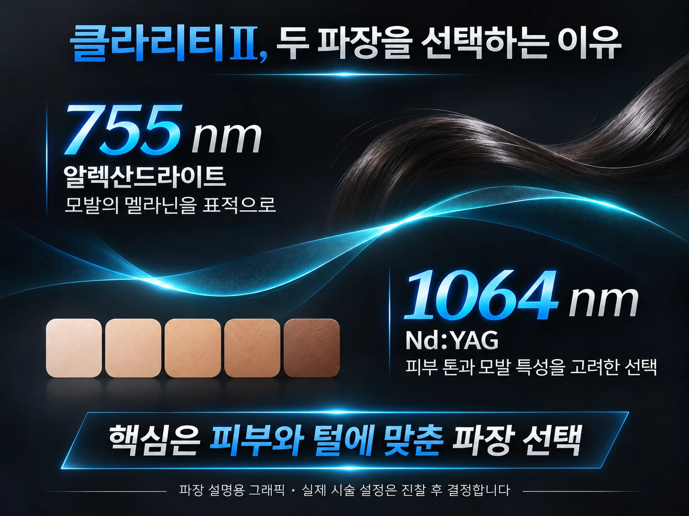
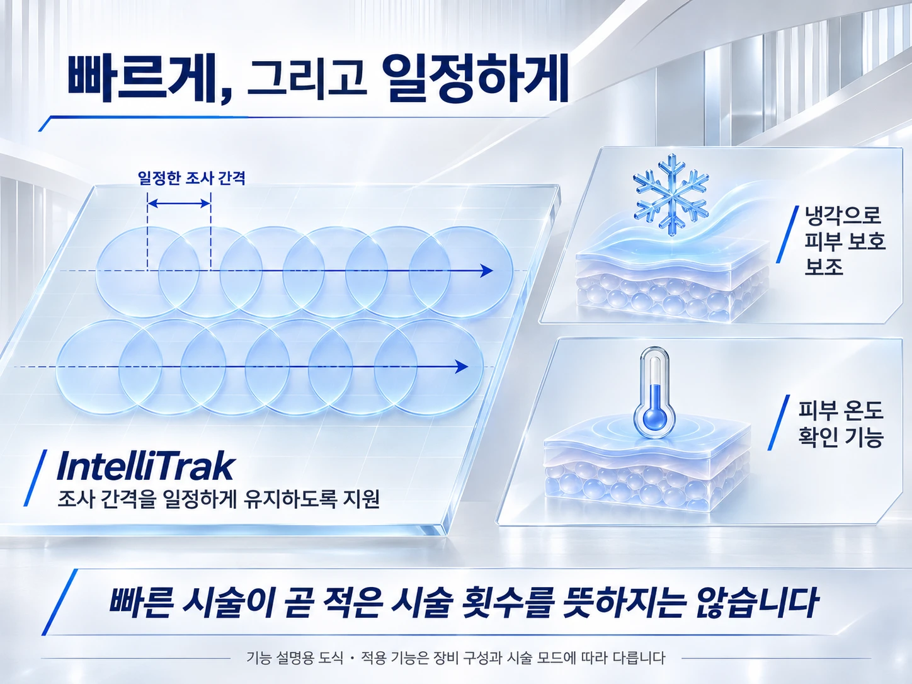

레이저 제모를 알아보다 보면 자연스럽게 장비 이름부터 비교하게 되지요. 그런데 장비의 장점을 제대로 이해하려면, 이름보다 실제로 어떤 기능이 있고 그 기능이 시술에서 어떻게 쓰이는지를 살펴보시는 편이 좋아요.
클라리티Ⅱ는 피부와 모발 상태에 맞춘 선택, 넓은 부위의 효율적인 조사, 시술 중 피부 반응 확인을 돕는 기능을 갖춘 레이저 장비예요. 하나씩 차근차근 말씀드릴게요.
① 두 파장으로 선택의 폭을 넓혀요
클라리티Ⅱ에는 755nm 알렉산드라이트와 1064nm Nd:YAG, 두 가지 파장이 한 장비에 들어 있어요.
두 파장이 있다는 것이 무조건 동시에 쓴다거나, 효과가 두 배가 된다는 뜻은 아니에요. 피부색과 모발의 굵기, 부위를 고려해 알맞은 파장을 고를 수 있다는 점이 핵심이에요.
755nm 알렉산드라이트는 멜라닌을 표적으로 하는 제모에 쓰이는데, 피부색이 짙은 분들은 표피 손상 위험을 함께 고려해야 해요. 1064nm 롱펄스 Nd:YAG는 피부색이 짙은 분들의 제모에서 중요한 선택지로 설명돼요.
그래서 두 파장의 장점은 ‘모든 피부에 똑같이 시술할 수 있다’가 아니라, 서로 다른 피부와 털의 조건에 맞춰 선택할 수 있는 여지가 있다는 데 있어요.

② 인텔리트랙은 일정한 조사 간격을 도와요
넓은 부위를 제모할 때는 레이저를 빠르게 조사하는 것만큼, 조사하는 자리를 고르게 이어 가는 것이 중요해요.
클라리티Ⅱ의 IntelliTrak(인텔리트랙)은 설정한 조사 간격과 겹침 정도를 일정하게 유지하도록 돕는 기능이에요. 제조사는 이를 빠르고 일관된 시술을 돕는 특징으로 소개하고 있어요.
환자분 입장에서 눈여겨보실 점은 단순한 속도보다 ‘필요한 범위를 계획적으로 다루는 데 도움이 되는가’예요. 다만 이런 기능도 시술자가 부위를 확인하고 피부 반응을 지켜보는 일을 대신하지는 않아요.
③ 다양한 스팟 크기로 부위에 맞게 접근해요
클라리티Ⅱ는 최대 25mm 크기의 스팟을 제공하고, 여러 크기의 카트리지를 쓸 수 있어요.
스팟은 한 번에 빛을 비추는 범위라고 생각하시면 돼요. 넓은 팔다리와 굴곡이 있는 작은 부위는 필요한 접근이 다르기 때문에, 부위에 맞는 크기를 고를 수 있다는 점이 장점이에요.
넓은 스팟과 조사 보조 기능은 시술 효율에 도움이 될 수 있어요. 하지만 한 번의 시술 시간이 짧아지는 것과 전체 시술 횟수가 줄어드는 것은 별개의 이야기예요. 모발의 성장주기는 장비의 속도만으로 바뀌지 않으니까요.
④ 냉각과 온도 확인 기능은 피부 반응을 살피는 보조 수단이에요
제조사는 피부 냉각과 실시간 피부 온도 확인 기능도 클라리티Ⅱ의 특징으로 안내하고 있어요. 냉각은 피부 표면을 보호하고 시술 중의 불편을 덜어 드리는 데 쓰일 수 있어요.
그렇지만 냉각 기능이 있다고 해서 아프지 않은 시술이라거나 화상 위험이 없는 시술이라고 말씀드릴 수는 없어요. 온도 정보 역시 알맞은 설정과 피부 반응 관찰을 돕는 자료일 뿐, 안전을 자동으로 보장해 주는 장치는 아니에요.

정리하면, 클라리티Ⅱ 제모의 장점은 두 파장의 선택 폭, 고른 조사를 돕는 기능, 부위에 맞는 스팟 활용, 그리고 냉각과 피부 반응 확인이에요.
다만 이런 장점은 한 분 한 분의 피부와 털에 맞는 판단이 더해질 때 비로소 의미가 있어요.
장비 이름만큼 중요한 것은, 그 기능을 누구에게 어떤 목적으로 쓰느냐예요.
다음 회에서는 제모 전후의 준비와 관리, 그리고 결과를 살펴보는 기준을 알아볼게요.
참고자료
- 루트로닉 국내 공식 · 클라리티Ⅱ 제품 안내 (kr.lutronic.com)
- DermNet (dermnetnz.org) · 알렉산드라이트 레이저 및 피부색에 따른 레이저 선택 안내
연재 목차 · 레이저 제모, 클라리티Ⅱ와 함께 알아보는 세 가지 이야기
- 1회매일 면도하는데, 레이저 제모는 무엇이 다를까요?
- 2회클라리티Ⅱ 제모, 어떤 점을 눈여겨봐야 할까요?
- 3회제모 효과만큼 중요한 시술 전후관리